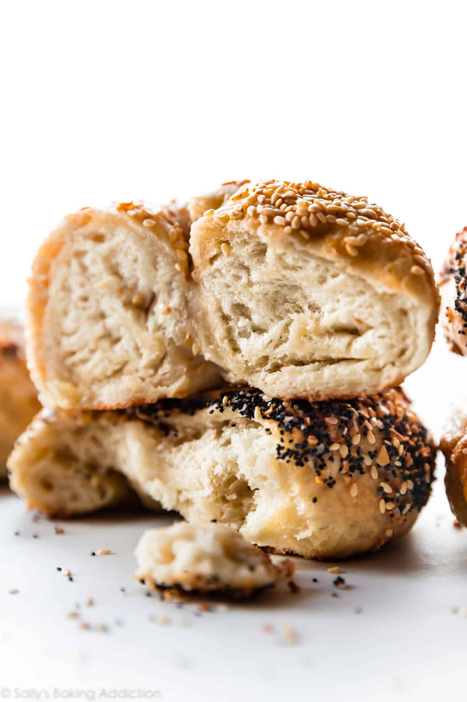

NY Style Bagels

Description:
Fresh bagels at home with this quick and easy recipe.*
Servings: 8
Prep time: 2 hours, 10 minutes
Cook time: 25 minutes
Total time: 3 hours
*Disclaimer this recipes is not in fact quick and easy
Ingredients:
- 1 and 1/2 cups of warm water
- 2 and 3/4 tablespoons of instant or active dry yeast
- 4 cups of bread flour, plus more for work surface
- 1/4 cup and 1 tablespoon of Barley Malt syrup
- 2 teaspoons of salt
- Oil for coating bowl
- Egg wash: 1 egg white with 1 tablespoon of water
Steps:
- Whisk the warm water and yeast together in the bowl of your stand mixer fitted with a dough hook attachment. Cover and allow to sit for 5 minutes
- Add the flour, brown sugar, and salt. Beat on low speed for 2 minutes. The dough is very stiff and will look somewhat dry.
- Turn the dough out onto a lightly floured surface. With lightly floured hands, knead the dough for 6-7 minutes. After kneading, the dough should still feel a little soft. Poke it with your finger—if it slowly bounces back, your dough is ready to rise. If not, keep kneading. The dough is too heavy for the mixer to knead it.
- Lightly grease a large bowl with oil or nonstick spray. Place the dough in the bowl, turning it to coat all sides in the oil. Cover the bowl with aluminum foil, plastic wrap, or a clean kitchen towel. Allow the dough to rise at room temperature for 60-90 minutes or until double in size.
- Line two large baking sheets with parchment paper or silicone baking mats.
- When the dough is ready, punch it down to release any air bubbles. Divide the dough into 8 equal pieces.
- Preheat oven to 425°F (218°C).
- Fill a large, wide pot with 2 quarts of water. Whisk in the honey. Bring water to a boil, then reduce heat to medium-high. Drop bagels in, 2-4 at a time, making sure they have enough room to float around. Cook the bagels for 1 minute on each side.
- Using a pastry brush, brush the egg wash on top and around the sides of each bagel. Place 4 bagels onto each lined baking sheet.
- Bake for 20-25 minutes, rotating the pan halfway through. You want the bagels to be a dark golden brown. Remove from the oven and allow bagels to cool on the baking sheets for 20 minutes, then transfer to a wire rack to cool completely.
- Slice, toast, top, whatever you want! Cover leftover bagels tightly and store at room temperature for a few days or in the refrigerator for up to 1 week.
Notes
- Overnight Make Ahead Instructions: Prepare the dough through step 4, but allow the dough to rise overnight in the refrigerator instead of at room temperature for 60-90 minutes. The slow rise gives the bagels wonderful flavor! In the morning, remove the dough from the refrigerator and let the dough rise for 45 minutes at room temperature. Continue with step 5.